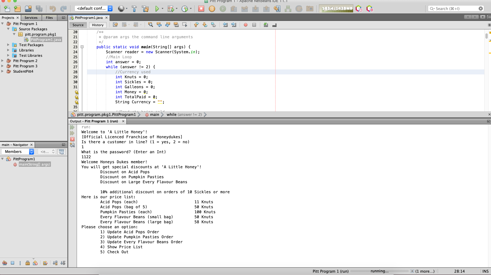
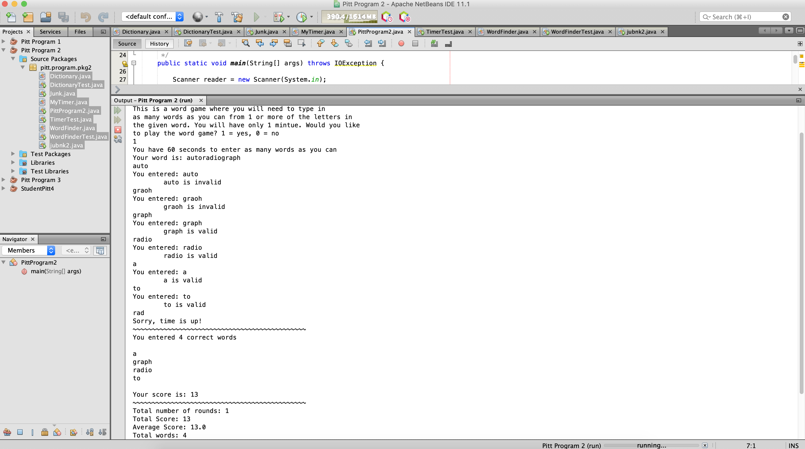
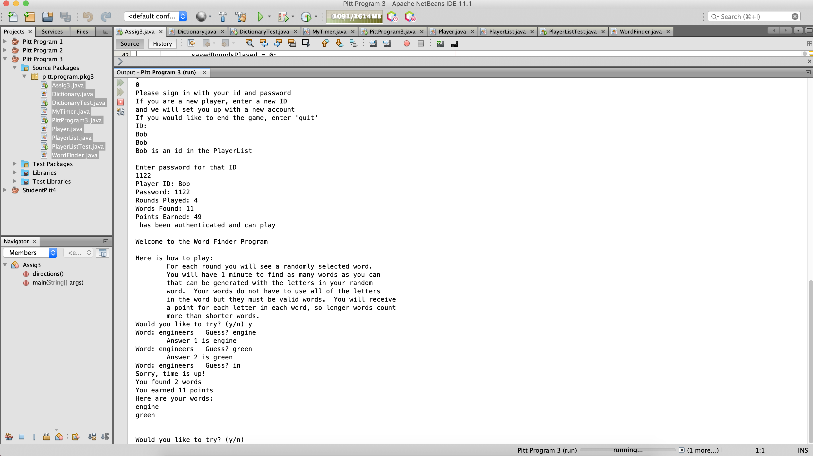
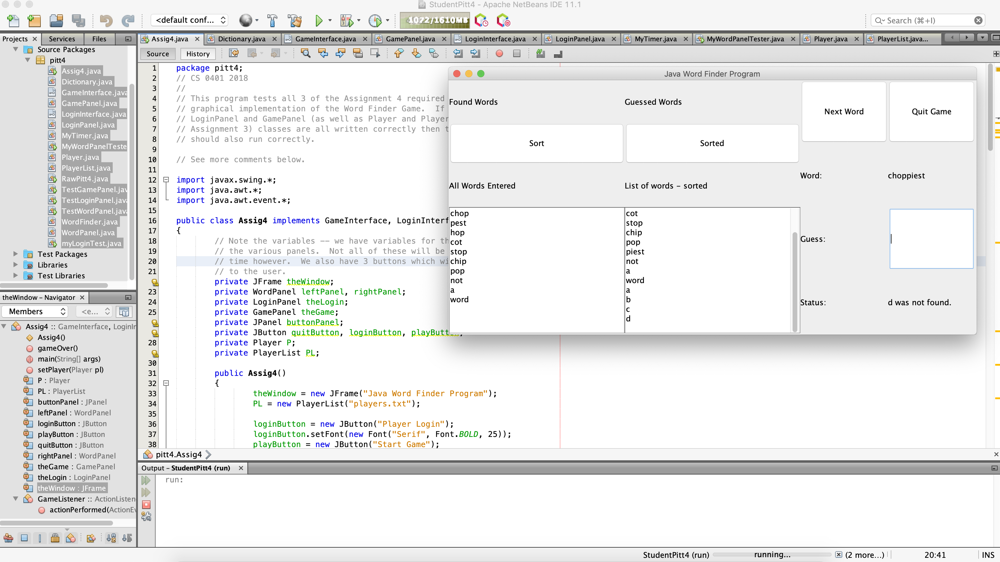

Java Programs
Here you can see the Dropbox link for all of my Java programs, you can download them and run them. Just make sure you use Netbeans.
These are the largest Java programs, I made while in senior year. The programs are Pitt Programs which are the programs that the University of Pitt had assigned our class to do to prove that we knew how to use Java.
Pitt Program 1 - Simple Shop
This is a simple java program that simulates a basic shop. It is Harry Potter themed, there is only text, and no GUI. There is also a discount for some items if you can get the password right. It also features a way to give back your change if you over pay. Feel free to download and give it a try here.
Pitt Program 2 - Word Game
This is a simple word game. You are given a word and you must make words out of that same word. It is timed for 60 seconds. There is an ID system that somewhat saves your progress. Feel free to download and give it a try here.
Pitt Program 3 - Word Game Save System
This is the same as the word game program but with the offical addition of saving your stats. There is a player file which contains all of the players and from within the program you can create a new player and give it a password Make sure you remember your password because it only gives you two chances to put in that said password. Feel free to download and give it a try here.
Pitt Program 4 - Word Game GUI
This is the last version of the word game program and now it features a nice GUI interface for the entire game. There is a simple start menu where you can log in as a player to start or quit. This program doesn't feature the player creation, so if you want to create a player, you must edit the player file. The game screen also features sorting for found and guessed words. You can also select next word to move on to the next word. Quiting will display your stats for that game. Feel free to download and give it a try here.